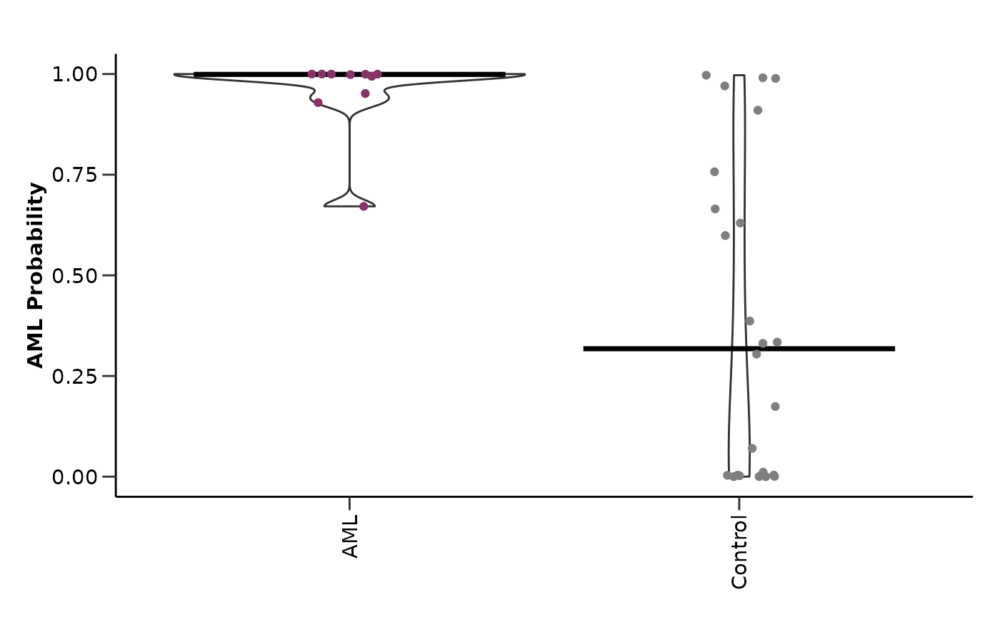
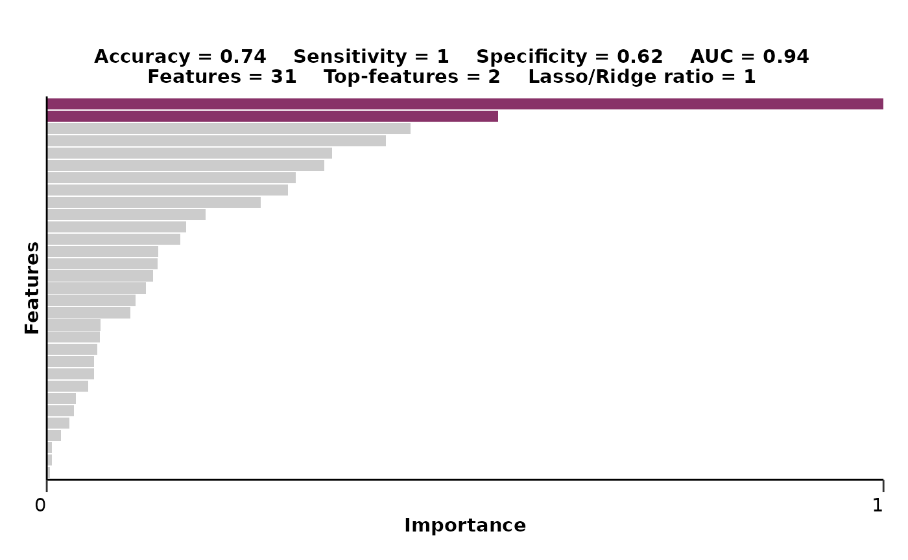
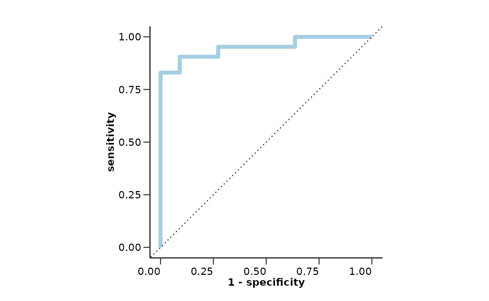

This vignette will show you how you can easily construct machine learning pipelines using HDAnalyzeR. We will load HDAnalyzeR and dplyr, load the example data and metadata that come with the package and initialize the HDAnalyzeR object.
Loading the Data
library(HDAnalyzeR)
library(dplyr)
hd_obj <- hd_initialize(dat = example_data,
metadata = example_metadata,
is_wide = FALSE,
sample_id = "DAid",
var_name = "Assay",
value_name = "NPX")📓 In the whole vignette the
verboseparameter of the model functions will be set to FALSE in order to keep this guide clean and concise. However, we recommend to leave it to default (TRUE) in order to know the model’s progress and that everything is running smoothly.
Splitting the Data
First, we will create the data split object using the
hd_split_data() function. This function will create a list
of the train and test sets. We can change the ratio of the train and
test sets, the seed for reproducibility, and the metadata variable to
classify. At this stage, we can also add metadata columns as
predictors.
We will use the Disease column as the variable to
classify and the Sex and Age columns as a
metadata predictor.
split_obj <- hd_split_data(hd_obj,
variable = "Disease",
ratio = 0.8,
seed = 123,
metadata_cols = c("Sex", "Age"))Running the Model
Regularized Regression
Let’s start with a regularized regression LASSO model via
hd_model_rreg(). Exactly like in the previous vignette with
the differential expression functions, we have to state the variable,
case and control(s) groups. To do specifically LASSO we will set the
mixture parameter to 1. We will also set the
verbose parameter to FALSE to not print the
progress of the model in shake of clarity for this vignette.
model_res <- hd_model_rreg(split_obj,
variable = "Disease",
case = "AML",
control = c("CLL", "MYEL", "GLIOM"),
grid_size = 5,
mixture = 1,
verbose = FALSE)
model_res$final_workflow
#> ══ Workflow ════════════════════════════════════════════════════════════════════
#> Preprocessor: Recipe
#> Model: logistic_reg()
#>
#> ── Preprocessor ────────────────────────────────────────────────────────────────
#> 5 Recipe Steps
#>
#> • step_dummy()
#> • step_nzv()
#> • step_normalize()
#> • step_corr()
#> • step_impute_knn()
#>
#> ── Model ───────────────────────────────────────────────────────────────────────
#> Logistic Regression Model Specification (classification)
#>
#> Main Arguments:
#> penalty = 1.26891735029786e-10
#> mixture = mixture
#>
#> Computational engine: glmnet
model_res$metrics
#> $accuracy
#> [1] 0.7352941
#>
#> $sensitivity
#> [1] 1
#>
#> $specificity
#> [1] 0.625
#>
#> $auc
#> [1] 0.9375
#>
#> $confusion_matrix
#> Truth
#> Prediction 0 1
#> 0 15 0
#> 1 9 10
model_res$roc_curve
model_res$probability_plot
model_res$feat_imp_plot
We can change several parameters in the hd_model_rreg()
function. For example, we can change the number of cross-validation
folds, the number of grid points for the hyperparameter optimization, or
the feature correlation threshold. Also, exactly as with the DE
functions, if the control parameter is not set, the
function will use all the other classes as controls. For more
information, please refer to hd_model_rreg()
documentation.
We will also set mixture to NULL to allow the model to optimize this parameter as well (elastic net regression instead of LASSO) and set a palette for our classes.
model_res <- hd_model_rreg(split_obj,
case = "AML",
cv_sets = 3,
grid_size = 5,
cor_threshold = 0.7,
palette = "cancers12",
verbose = FALSE)
model_res$final_workflow
#> ══ Workflow ════════════════════════════════════════════════════════════════════
#> Preprocessor: Recipe
#> Model: logistic_reg()
#>
#> ── Preprocessor ────────────────────────────────────────────────────────────────
#> 5 Recipe Steps
#>
#> • step_dummy()
#> • step_nzv()
#> • step_normalize()
#> • step_corr()
#> • step_impute_knn()
#>
#> ── Model ───────────────────────────────────────────────────────────────────────
#> Logistic Regression Model Specification (classification)
#>
#> Main Arguments:
#> penalty = 0.00355590672132398
#> mixture = 0.0638105825171806
#>
#> Computational engine: glmnetRandom Forest
We can use a different variable to classify like Sex and
even a different algorithm like random forest via
hd_model_rf(). However, do not forget that we should create
a new split object for this new model. In this case, because the classes
are already balanced, we will set the balance_groups
parameter to FALSE to consider all the samples in the training dataset.
Let’s also remove everything except from number of features and AUC from
the variable importance plot title.
split_obj <- hd_split_data(hd_obj, variable = "Sex", ratio = 0.8)
model_res <- hd_model_rf(split_obj,
variable = "Sex",
case = "F",
palette = "sex",
cv_sets = 3,
grid_size = 5,
balance_groups = FALSE,
plot_title = c("features", "auc"),
verbose = FALSE)Logistic Regression
If our data have a single predictor, we can use
hd_model_lr() instead of hd_model_rreg() to
perform a logistic regression. Random forest can be used as it was for
multiple predictors.
hd_obj_single <- hd_initialize(dat = example_data |> filter(Assay == "ADA"),
metadata = example_metadata,
is_wide = FALSE,
sample_id = "DAid",
var_name = "Assay",
value_name = "NPX")
split_obj <- hd_split_data(hd_obj_single, variable = "Disease", ratio = 0.8)
model_res <- hd_model_lr(split_obj, case = "AML", palette = "cancers12", verbose = FALSE)Visualizing Model Features
At this point we should also check how our selected protein features
look in boxplots. We will run a model as before, extract the features,
select the top-9 of them based on their importance in the model and plot
them with hd_plot_feature_boxplot(). We can either plot
case vs control or case vs all other classes by changing the
type argument.
âš ï¸ In case you have metadata variables as features, you will have to remove them from the feature vector before using the
hd_plot_feature_boxplot()function as it is made to visualize protein features.
hd_obj <- hd_initialize(dat = example_data,
metadata = example_metadata,
is_wide = FALSE,
sample_id = "DAid",
var_name = "Assay",
value_name = "NPX")
split_obj <- hd_split_data(hd_obj, variable = "Disease", ratio = 0.8)
model_res <- hd_model_rreg(split_obj, case = "AML", cv_sets = 3, grid_size = 5, verbose = FALSE)
features <- model_res$features |> arrange(desc(Scaled_Importance)) |> head(9) |> pull(Feature)
hd_plot_feature_boxplot(hd_obj,
features = features,
case = "AML",
palette = "cancers12",
type = "case_vs_control",
points = FALSE)
hd_plot_feature_boxplot(hd_obj,
features = features,
case = "AML",
palette = "cancers12",
type = "case_vs_all")
Multi-classification Model
We can also do multiclassification predictions with all available
classes in the data. The only thing that we should change is set the
case argument to NULL so that the model understands that we
want to classify all the classes. Let’s see an example with regularized
regression!
model_res <- hd_model_rreg(split_obj,
case = NULL,
cv_sets = 3,
grid_size = 5,
palette = "cancers12",
verbose = FALSE)
model_res$final_workflow
#> ══ Workflow ════════════════════════════════════════════════════════════════════
#> Preprocessor: Recipe
#> Model: multinom_reg()
#>
#> ── Preprocessor ────────────────────────────────────────────────────────────────
#> 5 Recipe Steps
#>
#> • step_dummy()
#> • step_nzv()
#> • step_normalize()
#> • step_corr()
#> • step_impute_knn()
#>
#> ── Model ───────────────────────────────────────────────────────────────────────
#> Multinomial Regression Model Specification (classification)
#>
#> Main Arguments:
#> penalty = 0.00445526787557566
#> mixture = 0.784269891628064
#>
#> Computational engine: glmnet
model_res$roc_curve
model_res$probability_plot
model_res$feat_imp_plot
Regression instead of Classification
Instead of a classification we can run a regression model. That means
that we will try to predict a continuous variable instead of a
categorical one. We can use either hd_model_rreg() or
hd_model_rf() functions with the case
parameter set to NULL. Let’s see an example with the Age
variable. Do not forget that we have to create a new split object for
this new model with Age as the variable of interest.
âš ï¸ We should not forget to update the
plot_titleargument by changing the metrics from “accuracy”, “sensitivity”, “apwcificity”, and “auc†to “rmse†and “rsq”.
split_obj <- hd_split_data(hd_obj, variable = "Age", ratio = 0.8)
model_res <- hd_model_rreg(split_obj,
variable = "Age",
case = NULL,
cv_sets = 3,
grid_size = 2,
plot_title = c("rmse", "rsq", "features", "mixture"),
verbose = FALSE)
model_res$final_workflow
#> ══ Workflow ════════════════════════════════════════════════════════════════════
#> Preprocessor: Recipe
#> Model: linear_reg()
#>
#> ── Preprocessor ────────────────────────────────────────────────────────────────
#> 5 Recipe Steps
#>
#> • step_dummy()
#> • step_nzv()
#> • step_normalize()
#> • step_corr()
#> • step_impute_knn()
#>
#> ── Model ───────────────────────────────────────────────────────────────────────
#> Linear Regression Model Specification (regression)
#>
#> Main Arguments:
#> penalty = 4.45590449619826e-06
#> mixture = 0.220184963848442
#>
#> Computational engine: glmnet
model_res$comparison_plot
model_res$feat_imp_plot
Test the Model on new Data
Furthermore, we can validate our trained model in new data. For this
example we will not use another dataset, but we will split the data
initially to create a train and a validation set and then split the
train set to an inner train and a test set. We will use this second
split to initially train the model and then evaluate it with the
validation data. In a real case scenario, you can do either this, or use
a completely different dataset to check that the model generalizes
properly. We will use the hd_model_test() function to do
this. Let’s see an example with the AML model.
# Split the data for training and validation sets
dat <- hd_obj$data
train_indices <- sample(1:nrow(dat), size = floor(0.8 * nrow(dat)))
train_data <- dat[train_indices, ]
validation_data <- dat[-train_indices, ]
hd_object_train <- hd_initialize(train_data, example_metadata, is_wide = TRUE)
hd_object_val <- hd_initialize(validation_data, example_metadata, is_wide = TRUE)
# Split the training set into training and inner test sets
split_obj <- hd_split_data(hd_object_train, variable = "Disease")
# Run the regularized regression model pipeline
model_object <- hd_model_rreg(split_obj,
variable = "Disease",
case = "AML",
grid_size = 2,
palette = "cancers12")
# Run the model evaluation pipeline
model_res <- hd_model_test(model_object,
hd_object_train,
hd_object_val,
case = "AML",
palette = "cancers12")
model_res$metrics
#> $accuracy
#> [1] 0.8205128
#>
#> $sensitivity
#> [1] 1
#>
#> $specificity
#> [1] 0.8018868
#>
#> $auc
#> [1] 0.9502573
#>
#> $confusion_matrix
#> Truth
#> Prediction 0 1
#> 0 85 0
#> 1 21 11
model_res$test_metrics # Results from the validation set
#> $accuracy
#> [1] 0.8050847
#>
#> $sensitivity
#> [1] 0.7777778
#>
#> $specificity
#> [1] 0.8073394
#>
#> $auc
#> [1] 0.8674822
#>
#> $confusion_matrix
#> Truth
#> Prediction 0 1
#> 0 88 2
#> 1 21 7
model_res$roc_curve
model_res$test_roc_curve # Results from the validation set
Summarizing Results from Multiple Binary Models
To summarize the results for multiple binary models we can use the
hd_plot_model_summary() function. We can create models of
different cases and compare them. Let’s run three different models for
three different cancers and summarize them.
📓 Do not forget that Ovarian Cancer is sex specific and we should consider run the analysis only with samples of that sex. We can easily integrate that into our pipeline using the
hd_filter()function.
split_obj <- hd_split_data(hd_obj, variable = "Disease")
model_aml <- hd_model_rreg(split_obj, case = "AML", cv_sets = 3, grid_size = 5, verbose = FALSE)
model_gliom <- hd_model_rreg(split_obj, case = "GLIOM", cv_sets = 3, grid_size = 5, verbose = FALSE)
split_obj_sex <- hd_split_data(hd_obj |> hd_filter(variable = "Sex", values = "F", flag = "k"),
variable = "Disease",
ratio = 0.8)
model_ovc <- hd_model_rreg(split_obj_sex, case = "OVC", cv_sets = 3, grid_size = 5, verbose = FALSE)
model_summary_res <- hd_plot_model_summary(list("AML" = model_aml,
"GLIOM" = model_gliom,
"OVC" = model_ovc),
class_palette = "cancers12")
model_summary_res$metrics_barplot
#> Ignoring unknown labels:
#> • colour : "Metric"
model_summary_res$features_barplot
model_summary_res$upset_plot_features
In case we have one case and multiple controls we can use the
hd_plot_feature_heatmap() function to visualize the protein
features in a heatmap. This function is useful as we can easily see if
the same features are important in multiple models. Let’s see an example
with the AML model and 3 different controls groups. We will combine DE
results of the same comparisons.
model_cll <- hd_model_rreg(split_obj, case = "AML", control = "CLL", cv_sets = 3, grid_size = 5, verbose = FALSE)
model_blood <- hd_model_rreg(split_obj,
case = "AML",
control = c("CLL", "MYEL", "LYMPH"),
cv_sets = 3,
grid_size = 5,
verbose = FALSE)
model_all <- hd_model_rreg(split_obj, case = "AML", cv_sets = 3, grid_size = 5, verbose = FALSE)
de_cll <- hd_de_limma(hd_obj, case = "AML", control = "CLL", correct = c("Sex", "Age"))
de_blood <- hd_de_limma(hd_obj,
case = "AML",
control = c("CLL", "MYEL", "LYMPH"),
correct = c("Sex", "Age"))
de_all <- hd_de_limma(hd_obj, case = "AML", correct = c("Sex", "Age"))
hd_plot_feature_heatmap(de_results = list("CLL" = de_cll,
"Blood" = de_blood,
"All" = de_all),
model_results = list("CLL" = model_cll,
"Blood" = model_blood,
"All" = model_all),
order_by = "CLL")
Finally, we can use the hd_plot_feature_network()
function to visualize the protein features in a network. This function
is useful as we can easily see the connections between the features and
the importance of each feature in the model. Let’s see an example with
the same 3 models from before.
feature_panel <- model_aml[["features"]] |>
filter(Scaled_Importance > 0.5) |>
mutate(Class = "AML") |>
bind_rows(model_gliom[["features"]] |>
filter(Scaled_Importance > 0.5) |>
mutate(Class = "GLIOM"),
model_ovc[["features"]] |>
filter(Scaled_Importance > 0.5) |>
mutate(Class = "OVC"))
print(head(feature_panel)) # Preview of the feature panel
#> # A tibble: 6 × 5
#> Feature Importance Sign Scaled_Importance Class
#> <fct> <dbl> <chr> <dbl> <chr>
#> 1 ANGPT1 1.31 NEG 1 AML
#> 2 ADGRG1 1.02 POS 0.779 AML
#> 3 AMY2A 0.848 POS 0.648 AML
#> 4 ADAMTS16 0.788 NEG 0.602 AML
#> 5 ADA 0.769 POS 0.587 AML
#> 6 ADAM8 0.721 NEG 0.551 AML
hd_plot_feature_network(feature_panel,
plot_color = "Scaled_Importance",
class_palette = "cancers12")
📓 Remember that these data are a dummy-dataset with artificial data and the results in this guide should not be interpreted as real results. The purpose of this vignette is to show you how to use the package and its functions.
sessionInfo()
#> R version 4.5.2 (2025-10-31)
#> Platform: x86_64-pc-linux-gnu
#> Running under: Ubuntu 24.04.3 LTS
#>
#> Matrix products: default
#> BLAS: /usr/lib/x86_64-linux-gnu/openblas-pthread/libblas.so.3
#> LAPACK: /usr/lib/x86_64-linux-gnu/openblas-pthread/libopenblasp-r0.3.26.so; LAPACK version 3.12.0
#>
#> locale:
#> [1] LC_CTYPE=C.UTF-8 LC_NUMERIC=C LC_TIME=C.UTF-8
#> [4] LC_COLLATE=C.UTF-8 LC_MONETARY=C.UTF-8 LC_MESSAGES=C.UTF-8
#> [7] LC_PAPER=C.UTF-8 LC_NAME=C LC_ADDRESS=C
#> [10] LC_TELEPHONE=C LC_MEASUREMENT=C.UTF-8 LC_IDENTIFICATION=C
#>
#> time zone: UTC
#> tzcode source: system (glibc)
#>
#> attached base packages:
#> [1] stats graphics grDevices utils datasets methods base
#>
#> other attached packages:
#> [1] dplyr_1.1.4 HDAnalyzeR_1.0.0
#>
#> loaded via a namespace (and not attached):
#> [1] gridExtra_2.3 rlang_1.1.6 magrittr_2.0.4
#> [4] furrr_0.3.1 tailor_0.1.0 compiler_4.5.2
#> [7] systemfonts_1.3.1 vctrs_0.6.5 lhs_1.2.0
#> [10] stringr_1.6.0 tune_2.0.1 pkgconfig_2.0.3
#> [13] shape_1.4.6.1 fastmap_1.2.0 ggraph_2.2.2
#> [16] labeling_0.4.3 utf8_1.2.6 rmarkdown_2.30
#> [19] prodlim_2025.04.28 ggbeeswarm_0.7.2 ragg_1.5.0
#> [22] UpSetR_1.4.0 purrr_1.2.0 xfun_0.54
#> [25] glmnet_4.1-10 cachem_1.1.0 jsonlite_2.0.0
#> [28] recipes_1.3.1 tweenr_2.0.3 vip_0.4.1
#> [31] parallel_4.5.2 R6_2.6.1 bslib_0.9.0
#> [34] rsample_1.3.1 stringi_1.8.7 RColorBrewer_1.1-3
#> [37] limma_3.66.0 ranger_0.17.0 parallelly_1.45.1
#> [40] boot_1.3-32 rpart_4.1.24 lubridate_1.9.4
#> [43] jquerylib_0.1.4 Rcpp_1.1.0 dials_1.4.2
#> [46] iterators_1.0.14 knitr_1.50 future.apply_1.20.0
#> [49] zoo_1.8-14 multiROC_1.1.1 igraph_2.2.1
#> [52] Matrix_1.7-4 splines_4.5.2 nnet_7.3-20
#> [55] timechange_0.3.0 tidyselect_1.2.1 viridis_0.6.5
#> [58] yaml_2.3.10 timeDate_4051.111 codetools_0.2-20
#> [61] listenv_0.10.0 plyr_1.8.9 lattice_0.22-7
#> [64] tibble_3.3.0 withr_3.0.2 S7_0.2.0
#> [67] evaluate_1.0.5 future_1.67.0 desc_1.4.3
#> [70] survival_3.8-3 polyclip_1.10-7 pillar_1.11.1
#> [73] foreach_1.5.2 generics_0.1.4 ggplot2_4.0.0
#> [76] scales_1.4.0 globals_0.18.0 class_7.3-23
#> [79] glue_1.8.0 tools_4.5.2 ggnewscale_0.5.2
#> [82] data.table_1.17.8 gower_1.0.2 forcats_1.0.1
#> [85] graphlayouts_1.2.2 fs_1.6.6 tidygraph_1.3.1
#> [88] grid_4.5.2 yardstick_1.3.2 tidyr_1.3.1
#> [91] ipred_0.9-15 ggforce_0.5.0 beeswarm_0.4.0
#> [94] vipor_0.4.7 cli_3.6.5 DiceDesign_1.10
#> [97] textshaping_1.0.4 workflows_1.3.0 parsnip_1.3.3
#> [100] viridisLite_0.4.2 lava_1.8.2 gtable_0.3.6
#> [103] GPfit_1.0-9 sass_0.4.10 digest_0.6.38
#> [106] ggrepel_0.9.6 farver_2.1.2 memoise_2.0.1
#> [109] htmltools_0.5.8.1 pkgdown_2.0.7 lifecycle_1.0.4
#> [112] hardhat_1.4.2 statmod_1.5.1 MASS_7.3-65
#> [115] sparsevctrs_0.3.4